Hi! My name is Bety, I'm 21 years old and since I have always been passionate about art and science.
So, when I studied Digital Art at Tecnológico de Monterrey, I decided to merge both.
In my work, I aim to combine art, technology, and innovation to create interactive
experiences that are not only visually engaging and memorable, but that also promote culture and
knowledge.
I believe that creativity can be a powerful tool for learning, and I'm excited
to keep exploring how digital art can bring complex ideas to life.
Projects
UNAM Triángulo Sagrado
Web visualization tool about the geological processes in a región of Querétaro
(Cerro el Frontón, el Zamorano, and Peña de Bernal), developed for the Universidad
Autónoma de México (Autonomous University of Mexico).
Responsabilities:
o Programming and full integration
o Creation of custom materials
o Shader-based real-time effects: flowing water, lava explosions, and dynamic texture
transitions
o UI design and implementation
Humberto
Stylized 3D digital sculpture inspired by medieval scribes.
Retopology of the 3D, UVs, and baking using low poly and high poly models.
Responsabilities:
o Concept art
o Sculpting and modelling
o Retopology, UV mapping, and baking (low poly and high poly workflow)
o Creation of custom shaders: emissive effects, subsurface scattering, animated vein masks,
and smoke sprite animations
AR Books IJB
Augmented reality adaptation of 2 children's books for the "Crazy Machines"
exhibition at the Internationale Jugendbibliothek IJB of Germany (International Youth
Library).
Responsabilities:
o Programming and integration
o Shader development: custom clip shader enabling transparency cuts along any axis, with
position fixed in AR space
o Optimization for AR experience
o 2D animation
o UI
The Cowboy Cockroach
Augmented reality videogame about a cockroach trapped inside a TV, played with a cardboard
box.
Responsabilities:
o Integration and programming
o Rigging and animation of the main character using mocap and animation transfer
o Creation of a reactive shader system for character damage and power-ups
o UI
The Gallo VS the nightmares
3D videogame for pc about Mexican toys that fight against famous legends of Mexican
culture.
Responsabilities:
o Low-poly modeling, rigging, and animation of characters
o Creation of trim sheets for efficient and stylized environment asset texturing
o UI
Restore it Yourself Studio
Put yourself in the shoes of a restorer while you clean, repair, and varnish famous paintings of the western world!
I designed a tool to create the paintings based on an image input. The mesh's size and UVs adjust to the proportions of the original image.
To create a mesh through code, vertex, triangles, and UVs are needed. First, I got the aspect ratio of the painting.
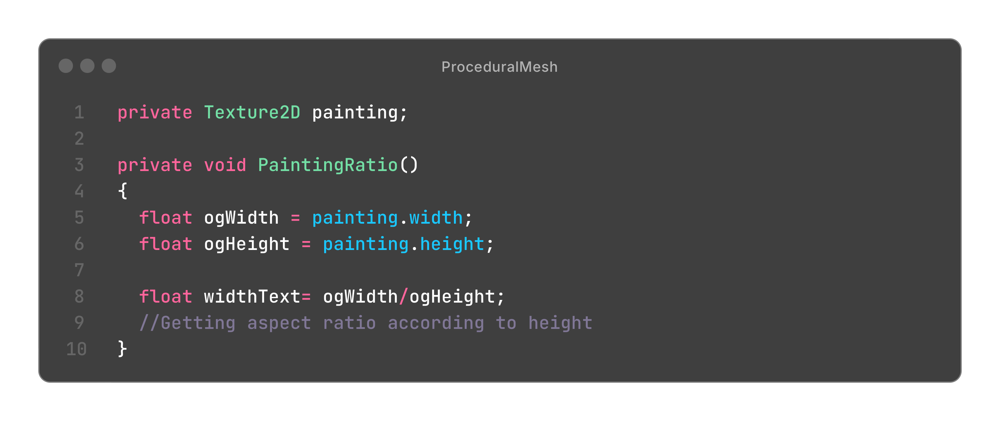
This mesh is made to have x numbers of faces, front and back (like a grid). So, based on the aspect ratio, I created the faces, first of the front, then of the back with an offset representing the thickness of the canvas.
Then, I created the triangles in the correct order, so that their normal would face the correct way.
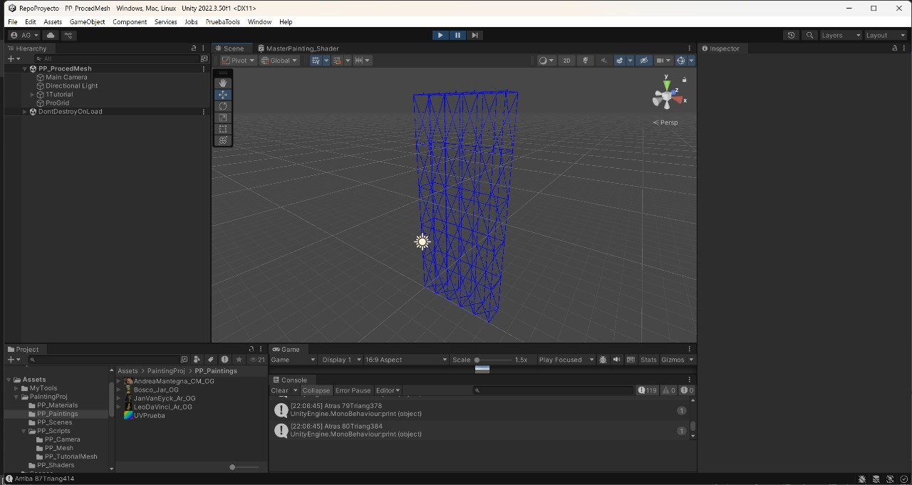
Finally, I did the UVs. I wanted to have all the textures in the same material. Therefore, I determined that the painting per se would occupy the first half of the UV space, while the canvas texture would be on the other half. The tricky part was the thickness, as it can vary on size. So, what I did was to put their vertex UVs "inside" the canvas texture, so that the texturing would be seamless.
The needed deformations are carried out in the shader, like the canvas texture tiling, etc.
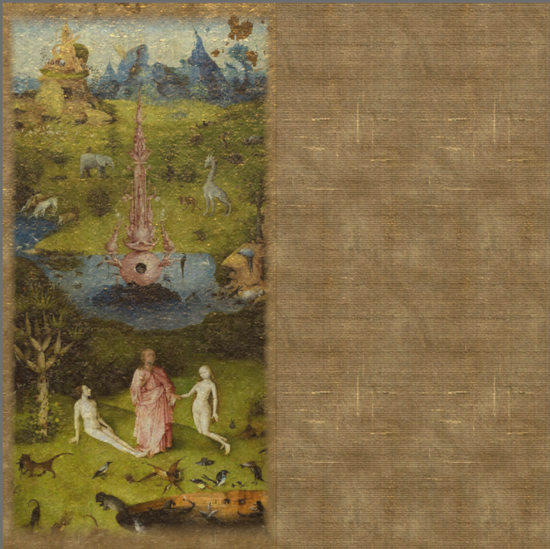
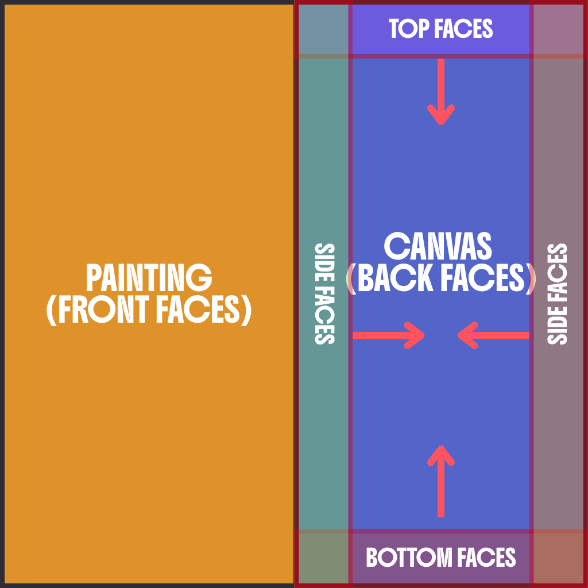
Damaging the Painting
I created a shader to generate "procedural" damage to the painting.
I imported packed noises with different characteristics. I combined them changing their tiling and offset, and using dot product.
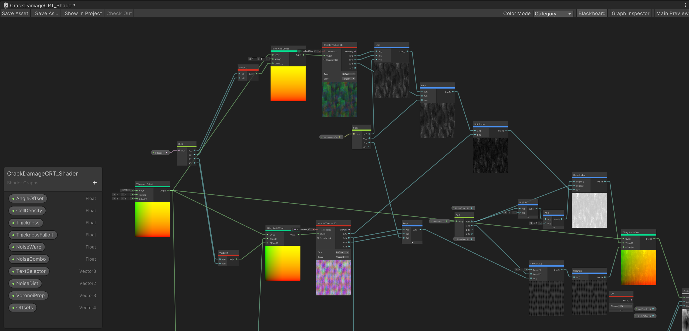
But this is not procedural enough. I wanted to achieve a crack-like noise, so I used a Voronoi noise, which is completely different if you change its values. However, this particular node doesn't let me access and modify the edges of the cells. Consequently, I made a Custom Voronoi node using hlsl based on Íñigo Quilez's one. This function calculates the distance from edges, so I can make them thinner or thicker. the distance I distorted it by plugging in the combined noises into its UVs.
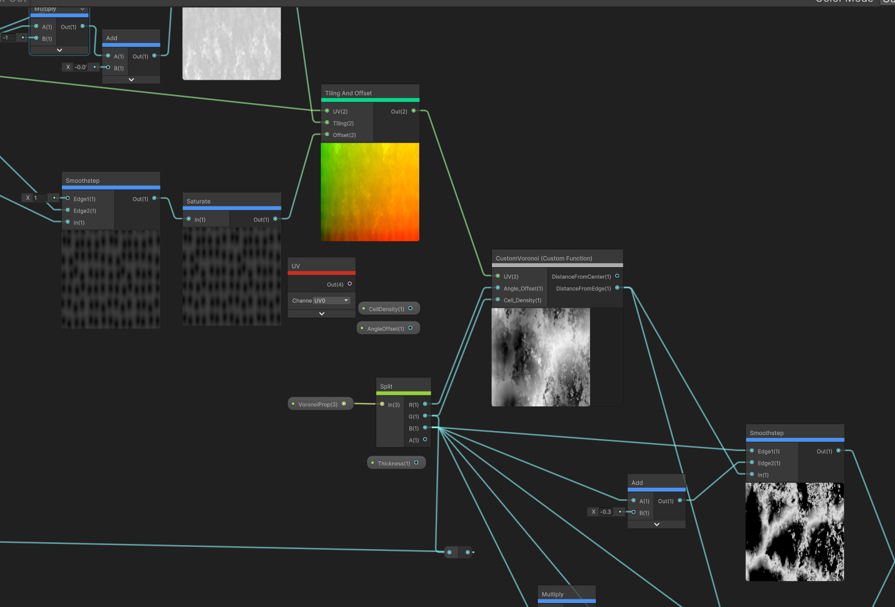
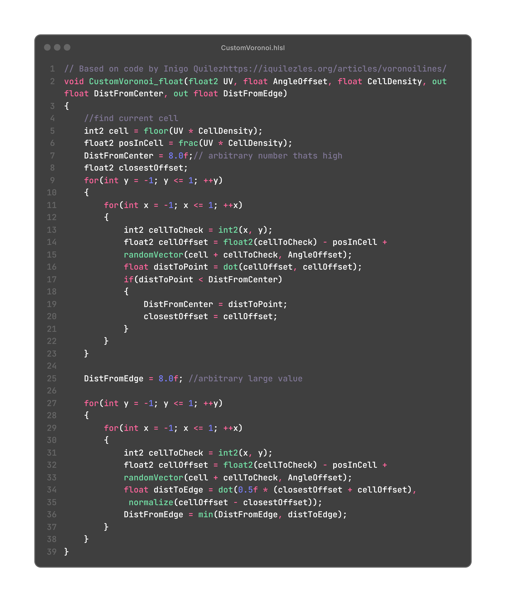
I exposed different parameters that are updated randomly each time a painting is selected. This texture is then integrated into the painting shader as a mask and as a heightmap for parallax occlusion mapping.
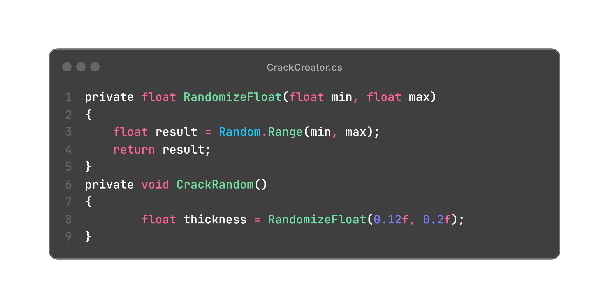
Painting on the Painting
I designed a painting mechanism using shaders and Custom Render Textures.
First, I obtained the UV coordinates through the mouse position. Using the past and current position, I calculated different vectors and their projections, as well as length and lerps to get a smooth line.
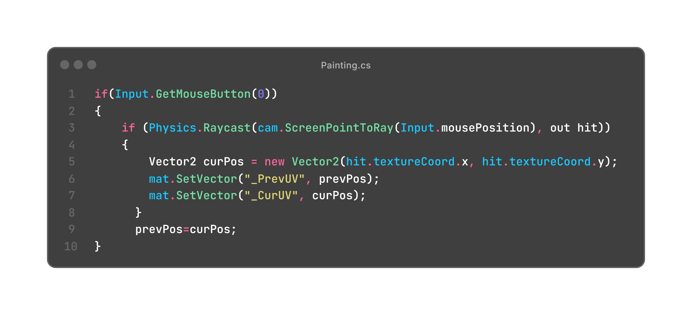
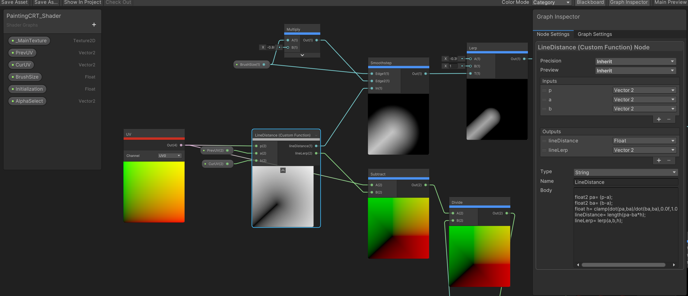
I imported different brush alphas. Using the past mathematical operations, I distorted their UVs so that the alpha "drags" to the brush position. Also note that it is possible to change the brush sizes.
This is a texture that feeds itself to get that brush stroke.
Then, I used another Custom Render Texture to bake the different brushes into one single texture.
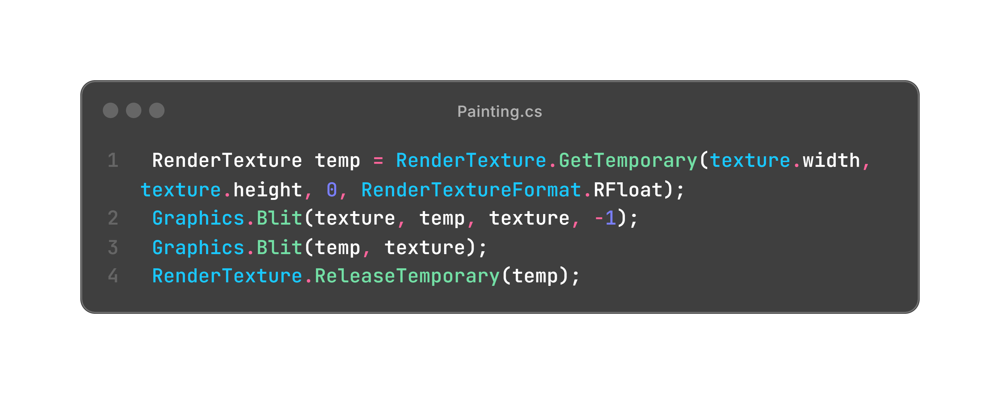
Extras
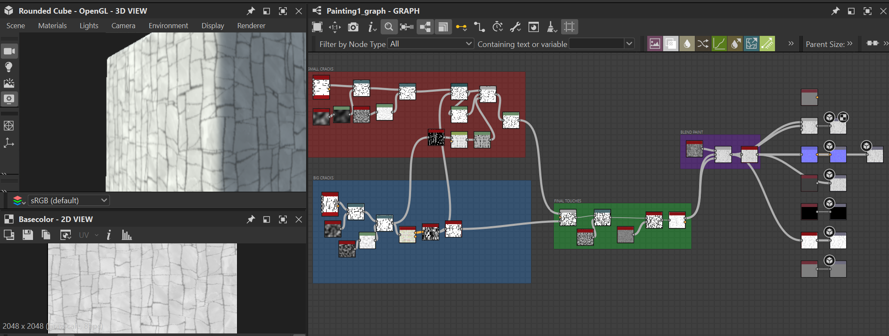
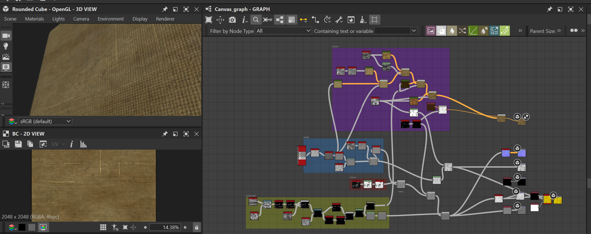
I designed the painting and canvas textures in Adobe Substance.
I created a hover shader with a very subtle fresnel animation to indicate which things are interactable.
The easel adjusts automatically to the painting's height.